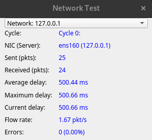

Network Test |
Top Previous Next |
|
The Network test tests your networking hardware and software. This is done by sending special ICMP_ECHO message using the Internet Control Message Protocol (ICMP). The ICMP_ECHO message is more commonly known as a ‘ping’. This message is echoed but to your computer by a remote host. This allows the reliability of the network connection to be determined. Up to 6 remote hosts can be selected by setting the Destination Network address in the Test Preferences window (Network preferences).
These values are used for the Network test. Each one must be a URL or an IP address (or left blank). •A URL is the name of a network host, eg. www.hostname.com •An IP address is a sequence of 4 numbers that correspond to a network host. eg. 169.192.0.1
The host selected must be accessible from the computer and capable of responding to the ‘ping’ command. PassMark recommends the selection of a local host to minimize data link problems, which are fairly common on the Internet. The IP address 127.0.0.1 can also be used for local loop back testing. It should be noted however that the loop back is done in the TCP/IP software and not on the network card, this address cannot be used when the "Test All NICs" option is checked.
The packet sent to the remote host contains a data payload and a checksum. Every time a packet is echoed from the remote host the checksum is verified and the data payload is compared byte by byte with the data that was sent. Any differences in the payload or an incorrect checksum will result in an error. The data payload is 64 bytes in length.
The amount of time BurnInTest will spend waiting for a packet can also be set in the Test Preferences window (see section 0, Network preferences).
 Network test window
The meaning of the information displayed in the network test window is given below.
NIC (Server) The NIC being tested and the address it is sending to and receiving from.
Packets Sent The number of packets sent to the remote host.
Packets Received The number of packets received back from the remote host. This should remain at the same level as the Packets Sent counter. If after 2 second a sent packet is not echoed, this causes a timeout error and Packets Sent will be greater than Packets received.
Average Delay The average round trip time in milliseconds for a packet.
Max Delay The maximum round trip time in milliseconds for a packet. The maximum values often happen at the very start of the test session. This is because the operating system is still loading and caching the required networking software.
Current delay The round trip time in milliseconds for the last packet sent.
Bytes sent The total number of bytes transmitted to the network.
Flow rate The number of packets being set per second. The duty cycle set for the Network Test determines how many packets are being sent per second.
Errors The number of errors that have been detected and the percentage of packets that had an error are displayed. The definition of what an “error” is can be changed from the Test Preferences window (see section 0, Network preferences). Depending on the settings in the preferences window, the error count can be incremented for every detected error or alternatively it can be set to only increment when the specified error ratio is exceeded. When the specified error ratio is exceeded, the ratio is reset to zero to avoid triggering a continuous stream of errors. Thus the ratio value displayed is the ratio of bad errors to good packets since the last time the threshold was crossed.
For the purposes of detecting a crossing of the threshold and signaling an error, the ratio is ignored until a sufficient number of packets have been sent to make the ratio valid. For example, if the ratio is set to 2%, at least 50 packets must be sent before the ratio is deemed to be valid. If the ratio is set to 0.1%, at least 1000 packets must be sent before the ratio is deemed to be valid.
Compatibility issues You need to have administrator privileges to run this test.
|